留存的定义
在互联网行业中，用户在某段时间内开始使用应用或访问网站，经过一段时间后，仍然继续会使用应用或会回访网站的被认作是留存。
常见留存：次日留存、7日留存、次月留存
“留存率”很重要，是因为留存率的作用在于：衡量不同渠道获得的用户的质量，新用户的使用效果，老用户的使用产品的频次（用户黏性）等。
留存表与留存图
- 留存表
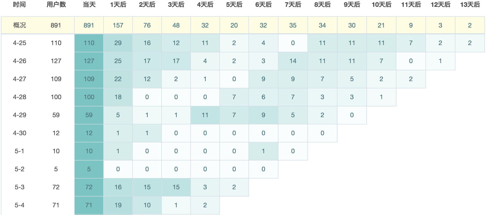
4-25 的次日留存为 29，表示 110 个新用户中，仅有 29 人于次日再次访问了该网站。
黄色标注的表格表示，总计 891 人为新用户，次日留存为 157 人。
- 留存图
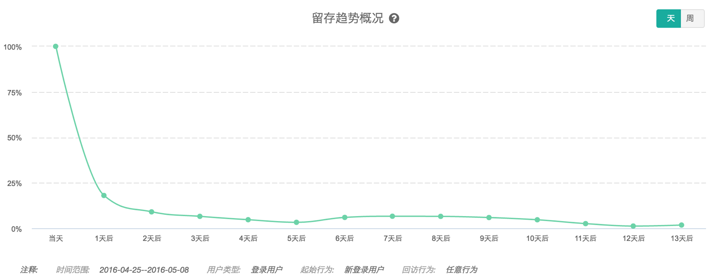
活跃用户数与留存量的关系
日常关注的指标：
- DAU(Daily Active User) 日活
- WAU(Weekly Active User) 周活
- MAU(Monthly Active User) 月活
日活，周活，月活的本质是什么？只关注这些指标够不够？
看似增长的活跃人数：
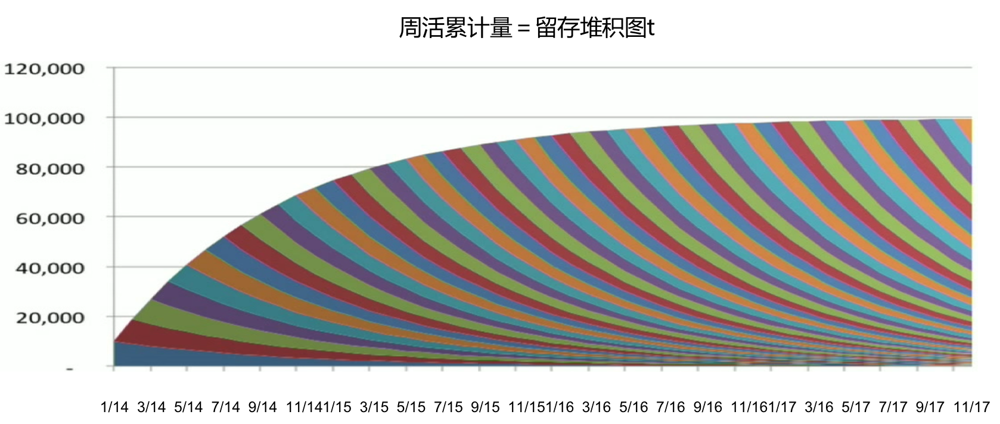
真正增长的活跃人数：
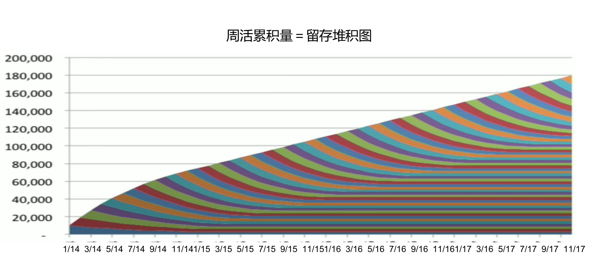
每一个颜色曲线代表留存曲线，在真正增长的活跃人数图中，用户会停留在稳定期。而在看似增长的活跃人数图中国年，用户的留存下降较快。
周活 = 留存堆积图
AARRR 模型
- Acquisition：用户获取
- Activation：用户激活
- Retention：用户留存
- Revenue：收入
- Referral：用户推荐
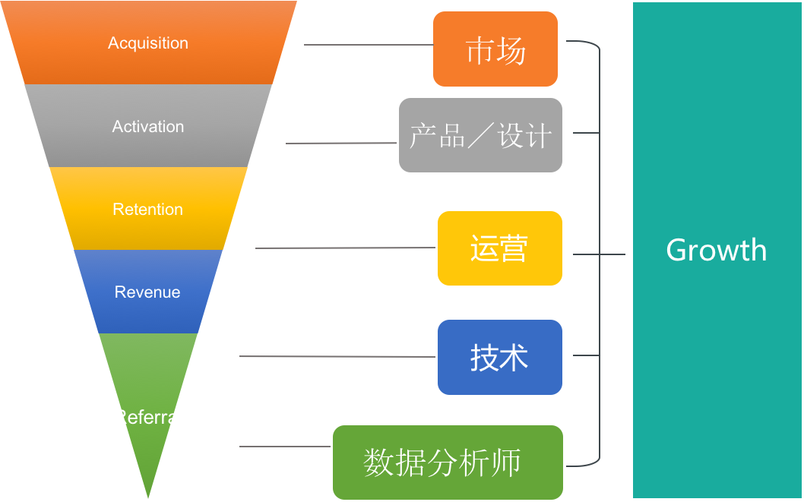
市场：将新用户引进来（用户激活）
帮助新用户发现核心功能，一旦用户使用频次较高时，即进入留存环节（必然伴随着用户流失）。
留存：AARRR 模型的基础部分
收入：收入从留存用户当中来，他是我们的核心用户，通过良好的运营模式
用户推荐：留存用户认为我们的产品不错，会推荐给别人 —— 市场
增长团队(Growth)：市场、技术、产品、数据分析师、数据科学家，通过技术手段和商业敏感度
来实现整个 AARRR 模型中涉及到的所有内容。
hotmail：邮件里增加签名带来了大量用户增长。
用户推荐：例如 GD，如果推荐一个朋友，可以进行一次免费的旅行。传统的市场渠道使用 APP 成本要比这个高得多。
留存是基础，是增长的核心。
拉新和增长之间的关系？
拉新只是增长的第一部分，拉新的成本往往是巨大的，而新用户在早期不能给企业带来价值，真正带来的价值是留存用户，实现真正意义的增长（用户体量和财富价值）。
因此我们要关注留存率。
提升留存的好处：
- 提升 Referral
- 提升 LTV（life time value，用户生命周期总价值）
- 提升升级概率
- 缩减回本日期
- 增多渠道获取选择
提升 Referral
不知道产品好与坏的时候，不会推荐给其他朋友，只有使用很满意时，才会进行推荐。
留存用户越多，推荐的越多。
比较好的产品：网易云音乐
提升 LTV
留在我们网站上时间越长，带给财富的可能性越大，如果用户能很长时间留下俩，很强的现金流。
提升升级概率
开始是免费的，只有留存用户，后期才可能成为高级付费用户。
缩减回本日期
同上，当越来越多的用户留下，通过产品升级换代，推荐给别人或续用等，才能带来财富。
增多渠道获取选择
用户生命价值，获取新用户成本为1/3，是一个非常好的比例。留存越多，增加市场投入渠道来获得更优质的客户。
留存曲线与 AARRR
下面的图展示了8周的留存曲线：
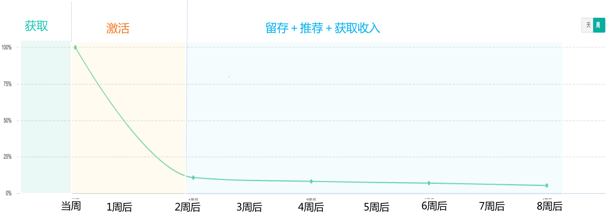
在当周与第二周之间，用户数量有了明显下滑。两周后，用户数量到达了一个相对稳定的水平，但还有一定程度下滑。
其中，当周是获取环节，当周到第二周是激活环节（满足用户需求，用户得以留存），第二周后进入留存环节。通过产品／运营角度的迭代和完善，使用户长时间留下，提高生命周期。
例如：滴滴打车券，刺激人们使用滴滴的产品。 Linked In 给别人评价后，对方有任何动作会进行推送，使用户访问网站。
核心：增加 Referral。
如何做能改善上面的留存曲线呢？
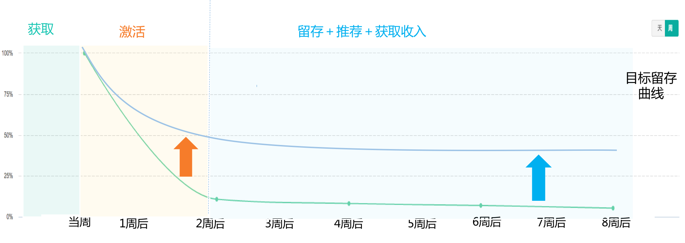
观察次日、周留存需要根据不同企业的具体情况来定。大公司的产品功能较复杂，可能会用周留存，大部分产品，日留存足以。
团队各部门如何配合提高留存率
市场运营
- 对比不同渠道留存曲线，发现“触发关键行为的用户”的渠道来源。即发现用户留存率高的渠道。
- 在市场运营角度，让用户快速接触关键行为。
用户导入到落地页上，通过留存曲线，发现哪些行为的留存度比较高。找到后市场进行精确匹配，提高留存率。
例如：常使用帮助文档的用户留存率较高，因此将投入更多资源使帮助文档更完善。
产品
- 通过留存分析，找出触发影响留存的关键行为
- 通过产品设计使用户尽早接触到这些行为
- 通过产品设计使用户重复这些行为
用户可能发现没价值就流失了，帮助用户尽快地发现价值。
例如：发现新用户在早期新建了很多的图标，进行圈选，建立了 dashboard，留存率较高。于是将按钮留在了左上角，希望用户尽快发现按钮。
产品的启发。
用户有时发现能满足需求，但是满足得并不好，则会导致用户流失。
用户运营
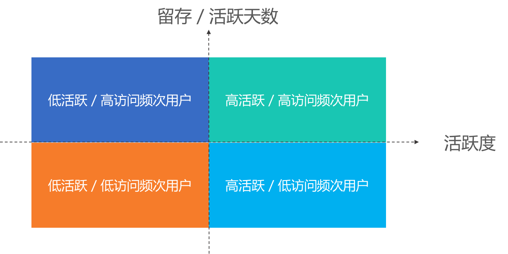
- 高活跃／高访问频次用户
- 高活跃／低访问频次用户：通常为早期用户，认可产品 可通过推送等方式提高用户活跃度。
- 低活跃／高访问频次用户：通常为老用户，使用时间长后只使用个别功能。这种用户属于高危用户，流失的可能性很大。发放调查问卷，寻找针对性策略。
- 低活跃／低访问频次用户：第一，没有给公司带来价值，第二，关注优先级最低的用户，暂时采取放弃的策略。
案例
留存分析方法论：
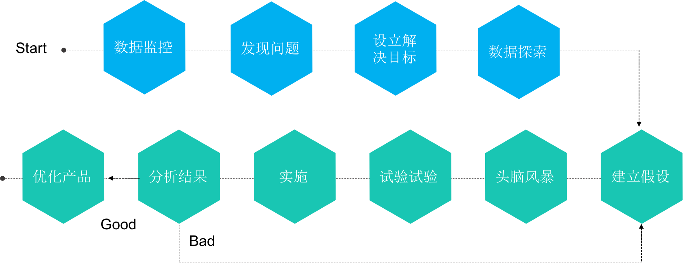
数据监控：日活／月活／留存／转化率等
例如：发现留存率一直下降，目标定位留存率提高百分之多少。头脑风暴，想一些方法如何提高。可能会经历很多次试验才能发现原因，如果发现效果很好，则进行产品优化；如果不好，则还需要再次试验。
案例：Sidekick
简介：为邮件（例如 Outlook）提供加强插件，
提供模板，模板可进行改动，使对方以为是针对性的邮件。也可监控对方是否查看邮件。
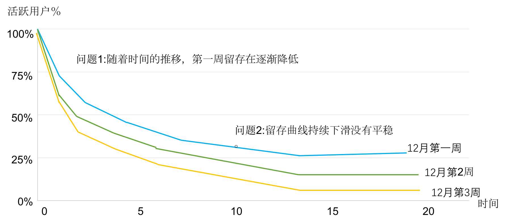
这就叫数据的监控。第一周是蓝色的线，第二周为绿色，第三周为黄色，说明留存曲线下降。
第一点：新用户（第一周）大幅下降
第二点：后期留存率未达到平稳，说明后期所有用户都会走掉。
目标一：新用户（第一周）周留存升高
目标二：曲线后期进入稳定趋势
如何分析探索数据：
- 用户分群：通过渠道，Email账号，企业账号还是私人账号等
- 分群对比：留存和流失人群的行为对比
- 用户调研：根据探索的数据提出一些针对性的问题，对流失用户进行调研
用户分群
我们发现：
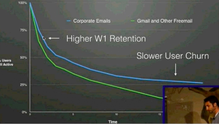
鼓励用户使用企业邮箱进行注册，但也可能导致转化率降低。已经用私人账号，使用运营手段，转换为企业邮箱注册。
分群对比
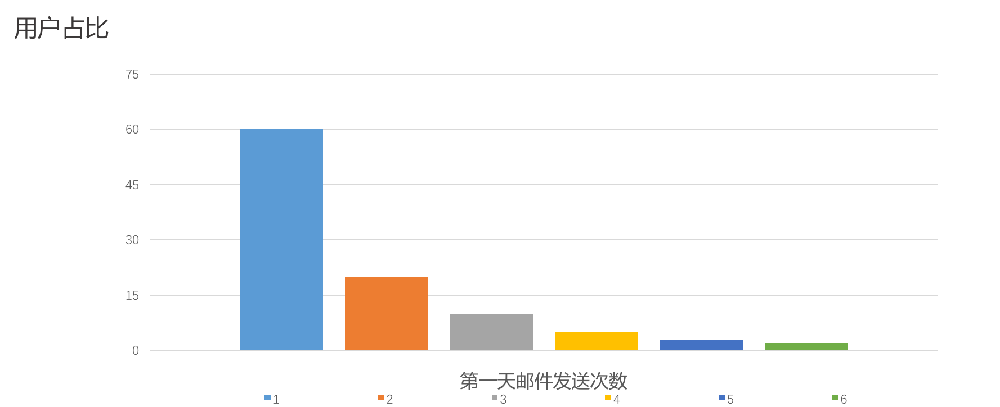
第一天发送邮件次数为 1 的 60%，大部分邮件只使用了一下产品就流失了。
用户调研
先了解后进行统计：
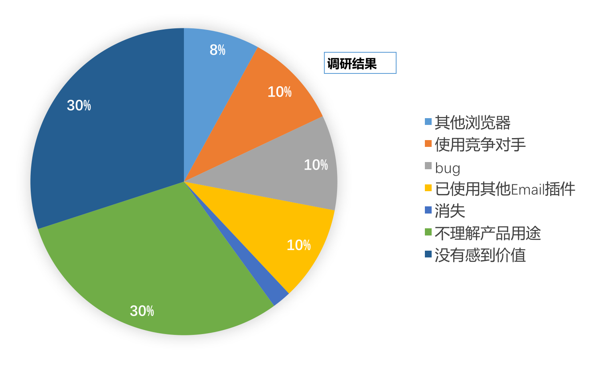
首先要解决问题：60% 的用户感觉没有价值，不了解产品用途。用户没有很快地发现价值，如何通过产品的设计让用户发现产品的价值，进行产品设计修改。
尝试方式：
- 删减功能，保留核心功能，发现用户留存率下降
- 给提示，增加红点，留存率继续下降
- 增加教学视频，留存率继续下降
- 下载安装完产品后，增加一句话提示“你可以去你的邮箱使用该产品”，之前用户不知道要在客户端使用，留存率得到了大幅提升。
至此，目标一完成，首周(onboarding)留存增加。
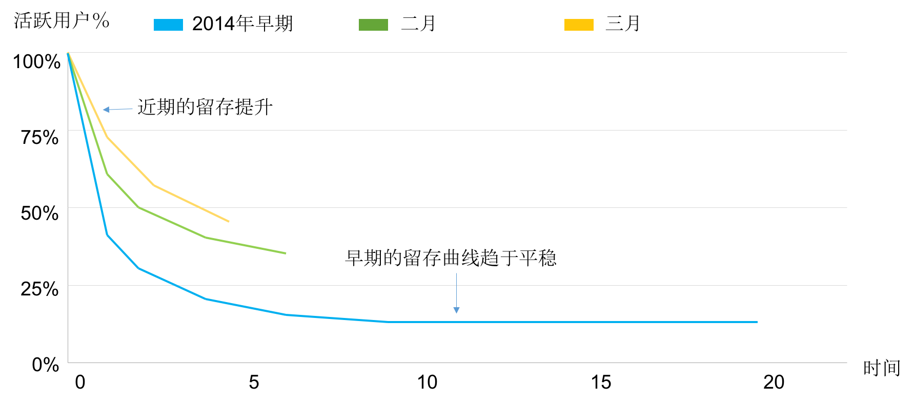